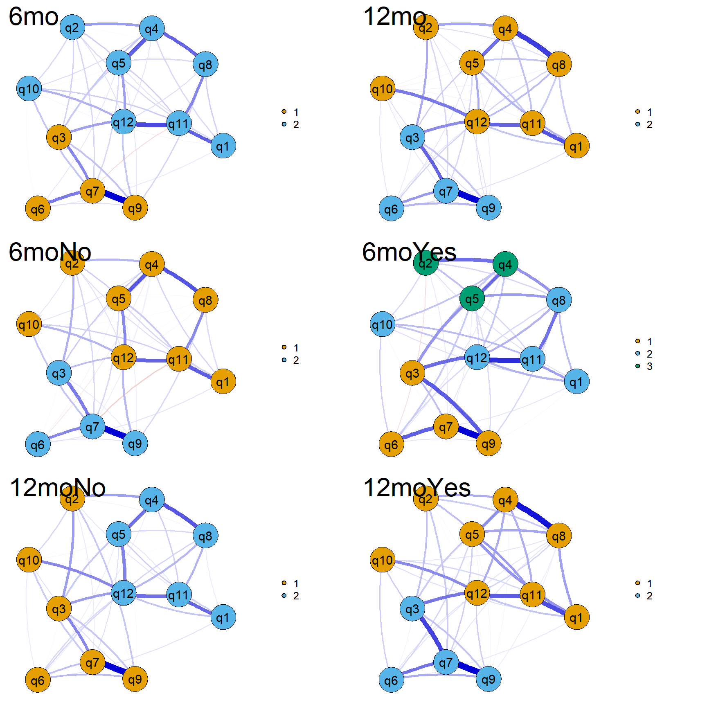
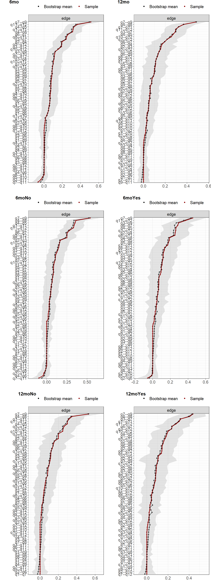

2-analysis
bernard-liew
2021-02-19
Last updated: 2021-02-23
Checks: 6 1
Knit directory: acl_rsi/
This reproducible R Markdown analysis was created with workflowr (version 1.6.2). The Checks tab describes the reproducibility checks that were applied when the results were created. The Past versions tab lists the development history.
The R Markdown file has unstaged changes. To know which version of the R Markdown file created these results, you’ll want to first commit it to the Git repo. If you’re still working on the analysis, you can ignore this warning. When you’re finished, you can run wflow_publish to commit the R Markdown file and build the HTML.
Great job! The global environment was empty. Objects defined in the global environment can affect the analysis in your R Markdown file in unknown ways. For reproduciblity it’s best to always run the code in an empty environment.
The command set.seed(20210219) was run prior to running the code in the R Markdown file. Setting a seed ensures that any results that rely on randomness, e.g. subsampling or permutations, are reproducible.
Great job! Recording the operating system, R version, and package versions is critical for reproducibility.
Nice! There were no cached chunks for this analysis, so you can be confident that you successfully produced the results during this run.
Great job! Using relative paths to the files within your workflowr project makes it easier to run your code on other machines.
Great! You are using Git for version control. Tracking code development and connecting the code version to the results is critical for reproducibility.
The results in this page were generated with repository version 1b00161. See the Past versions tab to see a history of the changes made to the R Markdown and HTML files.
Note that you need to be careful to ensure that all relevant files for the analysis have been committed to Git prior to generating the results (you can use wflow_publish or wflow_git_commit). workflowr only checks the R Markdown file, but you know if there are other scripts or data files that it depends on. Below is the status of the Git repository when the results were generated:
Ignored files:
Ignored: .Rhistory
Ignored: .Rproj.user/
Untracked files:
Untracked: output/nw_res.RDS
Unstaged changes:
Modified: analysis/2-analysis.Rmd
Note that any generated files, e.g. HTML, png, CSS, etc., are not included in this status report because it is ok for generated content to have uncommitted changes.
These are the previous versions of the repository in which changes were made to the R Markdown (analysis/2-analysis.Rmd) and HTML (docs/2-analysis.html) files. If you’ve configured a remote Git repository (see ?wflow_git_remote), click on the hyperlinks in the table below to view the files as they were in that past version.
| File | Version | Author | Date | Message |
|---|---|---|---|---|
| Rmd | 1b00161 | Liew | 2021-02-22 | added subgroup analysis and NCT |
| html | aeab96b | bernard-liew | 2021-02-19 | Build site. |
| Rmd | 0f1dbac | bernard-liew | 2021-02-19 | first exploration |
| html | 0f1dbac | bernard-liew | 2021-02-19 | first exploration |
Load package
# Helper
library (tidyverse)
library (arsenal)
library (cowplot)
# Modelling
library (huge)
library (bootnet)
library (qgraph)
library (NetworkComparisonTest)
# Parallel
library (furrr)
# Styling
library (kableExtra)Import
Binarize rts_6 and rts_12.
rts_6 = "no" if either missing NA, "na_no_prior" or "no". Everything else is "yes".
rts_12 = "no" if either missing "no", or "yes_lower". Everything else is "yes".
df <- readRDS ("output/dat_acl.RDS") %>%
mutate (rts_6binary = ifelse (rts_6 %in% c("na_no_prior", "no"), "no",
ifelse (rts_6 %in% c("NA"), "na", "yes")),
rts_12binary = ifelse (rts_12 %in% c("no", "yes_lower"), "no", "yes"))Network analysis
Create datasets
# 6th month RSI data
dat1 <- df%>%
select (matches ("_6")) %>%
select (!matches ("ax_6m|ax_12m|aclrsi|rts_"))
# 12th month RSI data
dat2 <- df%>%
select (matches ("_12")) %>%
select (!matches ("ax_6m|ax_12m|aclrsi|rts_"))
# 6th month RSI data on subgroup RTS at 6mo = no
dat3 <- df%>%
filter (rts_6binary != "na") %>%
filter (rts_6binary == "no") %>%
select (matches ("_6")) %>%
select (!matches ("ax_6m|ax_12m|aclrsi|rts_"))
# 6th month RSI data on subgroup RTS at 6mo = yes
dat4 <- df %>%
filter (rts_6binary != "na") %>%
filter (rts_6binary == "yes") %>%
select (matches ("_6")) %>%
select (!matches ("ax_6m|ax_12m|aclrsi|rts_"))
# 12th month RSI data on subgroup RTS at 12mo = no
dat5 <- df%>%
filter (rts_12binary == "no") %>%
select (matches ("_12")) %>%
select (!matches ("ax_6m|ax_12m|aclrsi|rts_"))
# 12th month RSI data on subgroup RTS at 12mo = yes
dat6 <- df%>%
filter (rts_12binary == "yes") %>%
select (matches ("_12")) %>%
select (!matches ("ax_6m|ax_12m|aclrsi|rts_"))
var_names <- str_remove (names (dat1), "_6")
names(dat1) <- names(dat2) <- names(dat3) <- names(dat4) <- names(dat5) <- names(dat6) <- paste0("q", 1:ncol (dat1))
res <- tibble (subgrp = c(1:6),
id = c("6mo", "12mo", "6moNo", "6moYes", "12moNo", "12moYes"),
data = list (dat1, dat2, dat3, dat4, dat5, dat6))Perform analysis
B <- 1000
plan (multisession)
stats_type <- c("strength", "betweenness", "closeness")
res <- res %>%
mutate (dat_norm = map (data, huge.npn)) %>%
mutate (nw = map (dat_norm, estimateNetwork,
default="EBICglasso",
corMethod = "cor",
tuning = 0.5,
lambda.min.ratio = 0.001,
corArgs =
list(method = "pearson",
use = "pairwise.complete.obs"))) %>%
# Get centrality measures
mutate (centr = map (nw, centralityTable)) %>%
mutate (centr_stb = future_map (nw,
bootnet,
nBoots = B,
type = "case",
statistics = stats_type,
.options = furrr_options(seed = TRUE))) %>%
mutate (cor_stb = map (centr_stb,
corStability)) %>%
mutate (edgewts = future_map (nw,
bootnet,
nBoots = B,
.options = furrr_options(seed = TRUE)))
saveRDS(res,
"output/nw_res.RDS") Results
Plot network
Blue edges - positive correlation. Red edges - negative correlation.
The thickness of the edges indicate the magnitude of correlation.
par(mfrow= c(3,2))
# Visualize network
p1 <- plot (res$nw[[1]], title = res$id[[1]], label.cex = 1.5, vsize = 10, curve = 0.4, curveAll = TRUE)
plot (res$nw[[2]], title = res$id[[2]], layout = p1$layout, label.cex = 1.5, vsize = 10, curve = 0.4, curveAll = TRUE)
plot (res$nw[[3]], title = res$id[[3]], layout = p1$layout, label.cex = 1.5, vsize = 10, curve = 0.4, curveAll = TRUE)
plot (res$nw[[4]], title = res$id[[4]], layout = p1$layout, label.cex = 1.5, vsize = 10, curve = 0.4, curveAll = TRUE)
plot (res$nw[[5]], title = res$id[[5]], layout = p1$layout, label.cex = 1.5, vsize = 10, curve = 0.4, curveAll = TRUE)
plot (res$nw[[6]], title = res$id[[6]], layout = p1$layout, label.cex = 1.5, vsize = 10, curve = 0.4, curveAll = TRUE)
Plot edge weights stability
95% CI of different edge weights that do not overlap are significantly different
w_fig <- map (res$edgewts, plot, order = "sample", CIstyle = "SE")
w_fig <- map (w_fig, ~.x +
theme(text = element_text(size = 16)),
include = "all", print = FALSE, scale = "relative")
cowplot::plot_grid(plotlist = w_fig, labels = res$id, vjust = 1, hjust = -1, ncol = 2, nrow = 3)
Plot centrality
High centrality nodes have strong connections to many other nodes, and act as hubs that connect otherwise disparate nodes to one another. Low centrality nodes exist on the periphery of the network, with fewer and weaker connections to other nodes of the network.
Strength is the sum of the absolute value of its connections with other nodes in the network.
Closeness centrality is defined as the inverse of the sum of the distances of the focal node from all the other nodes in the network. Closeness is the average shortest path between a given node and the remaining nodes in the network. Nodes with higher closeness are more proximally connected to the rest of the network.
Betweenness is the number of times in which a given node lies on the shortest path between two other nodes.
The greater the value of centrality indices to one, the more important the variable.
c_fig <- map (res$nw, centralityPlot, include = c("Closeness", "Strength", "Betweenness"),
print = FALSE, scale = "relative") %>%
map (~.x +
scale_x_continuous(breaks= c(0, 0.5, 1), lim = c(0, 1)) +
theme(text = element_text(size = 20),
axis.text.x = element_text(angle = 45, hjust = 1)),
include = "all", print = FALSE, scale = "relative")
#tiff(width = 15, height = 15, units = "in", res = 100, file = "output/odi_strength.tiff")
cowplot::plot_grid(plotlist = c_fig, labels = res$id, vjust = 1, hjust = 0, ncol = 2, nrow = 3)
#dev.off()Plot centrality stability
# Plot centrality stability
s_fig <- map (res$centr_stb, plot, statistics = c("closeness", "strength", "betweenness"))
s_fig <- map (s_fig, ~.x +
ylab ("Ave Corr") +
theme(text = element_text(size = 20),
axis.text.x = element_text(angle = 90, hjust = 1)),
include = "all", print = FALSE, scale = "relative")
#tiff(width = 15, height = 15, units = "in", res = 100, file = "output/odi_stability.tiff")
cowplot::plot_grid(plotlist = s_fig, labels = res$id, vjust = 1, hjust = 0, ncol = 2, nrow = 3)
#dev.off()Compare networks
Compare the networks for the RSI at 6th and 12th months
pair_res <- NCT (res$nw[[1]],
res$nw[[2]],
it = 1000,
paired = TRUE,
test.edges = TRUE,
progressbar = FALSE,
test.centrality = TRUE,
p.adjust.methods = "none",
centrality = c("closeness", "strength", "betweenness"))The networks between the 6th and 12th month are not significantly different (p = 0.688).
Edges which are different between networks
pair_res$einv.pvals %>%
filter (`p-value` < 0.05) Var1 Var2 p-value
1 q6 q8 0.025
2 q4 q11 0.023
3 q8 q11 0.040Centralities which are different between networks
pair_res$diffcen.pval %>%
as.data.frame() %>%
filter_all (any_vars(. < 0.05)) closeness strength betweenness
q6 0.918 0.009 1Compare the networks for the RSI at 6th month for those whose RTS value at 6mo was no vs yes
pair_res <- NCT (res$nw[[3]],
res$nw[[4]],
it = 1000,
paired = FALSE,
test.edges = TRUE,
progressbar = FALSE,
test.centrality = TRUE,
p.adjust.methods = "none",
centrality = c("closeness", "strength", "betweenness"))The networks are not significantly different (p = 0.202).
Edges which are different between networks
pair_res$einv.pvals %>%
filter (`p-value` < 0.05) Var1 Var2 p-value
1 q4 q6 0.018
2 q5 q8 0.044
3 q6 q8 0.033
4 q3 q9 0.002
5 q7 q11 0.038
6 q7 q12 0.028Centralities which are different between networks
pair_res$diffcen.pval %>%
as.data.frame() %>%
filter_all (any_vars(. < 0.05)) closeness strength betweenness
q7 0.090 0.004 0.075
q8 0.853 0.042 0.406Compare the networks for the RSI at 12th month for those whose RTS value at 12mo was no vs yes
pair_res <- NCT (res$nw[[5]],
res$nw[[6]],
it = 1000,
paired = FALSE,
test.edges = TRUE,
progressbar = FALSE,
test.centrality = TRUE,
p.adjust.methods = "none",
centrality = c("closeness", "strength", "betweenness"))The networks are not significantly different (p = 0.36).
Edges which are different between networks
pair_res$einv.pvals %>%
filter (`p-value` < 0.05) Var1 Var2 p-value
1 q5 q12 0.031Centralities which are different between networks
pair_res$diffcen.pval %>%
as.data.frame() %>%
filter_all (any_vars(. < 0.05))[1] closeness strength betweenness
<0 rows> (or 0-length row.names)
sessionInfo()R version 4.0.2 (2020-06-22)
Platform: x86_64-w64-mingw32/x64 (64-bit)
Running under: Windows 10 x64 (build 18363)
Matrix products: default
locale:
[1] LC_COLLATE=English_United Kingdom.1252
[2] LC_CTYPE=English_United Kingdom.1252
[3] LC_MONETARY=English_United Kingdom.1252
[4] LC_NUMERIC=C
[5] LC_TIME=English_United Kingdom.1252
attached base packages:
[1] stats graphics grDevices utils datasets methods base
other attached packages:
[1] kableExtra_1.3.1 furrr_0.2.1
[3] future_1.21.0 NetworkComparisonTest_2.2.1
[5] qgraph_1.6.5 bootnet_1.4.6
[7] huge_1.3.4.1 cowplot_1.1.1
[9] arsenal_3.5.0 forcats_0.5.0
[11] stringr_1.4.0 dplyr_1.0.2
[13] purrr_0.3.4 readr_1.4.0
[15] tidyr_1.1.2 tibble_3.0.4
[17] ggplot2_3.3.3 tidyverse_1.3.0
loaded via a namespace (and not attached):
[1] R.utils_2.10.1 tidyselect_1.1.0 htmlwidgets_1.5.3
[4] grid_4.0.2 munsell_0.5.0 codetools_0.2-18
[7] withr_2.3.0 colorspace_2.0-0 NetworkToolbox_1.4.1
[10] highr_0.8 knitr_1.30 rstudioapi_0.13
[13] stats4_4.0.2 listenv_0.8.0 labeling_0.4.2
[16] git2r_0.27.1 mnormt_2.0.2 farver_2.0.3
[19] rprojroot_2.0.2 parallelly_1.23.0 vctrs_0.3.6
[22] generics_0.1.0 xfun_0.20 R6_2.5.0
[25] doParallel_1.0.16 smacof_2.1-1 reshape_0.8.8
[28] assertthat_0.2.1 promises_1.1.1 scales_1.1.1
[31] nnet_7.3-14 gtable_0.3.0 globals_0.14.0
[34] weights_1.0.1 workflowr_1.6.2 rlang_0.4.10
[37] splines_4.0.2 wordcloud_2.6 broom_0.7.4.9000
[40] checkmate_2.0.0 yaml_2.2.1 reshape2_1.4.4
[43] abind_1.4-5 modelr_0.1.8 d3Network_0.5.2.1
[46] backports_1.2.0 httpuv_1.5.4 Hmisc_4.4-2
[49] tools_4.0.2 psych_2.0.12 lavaan_0.6-7
[52] ellipsis_0.3.1 RColorBrewer_1.1-2 polynom_1.4-0
[55] Rcpp_1.0.6 plyr_1.8.6 base64enc_0.1-3
[58] rpart_4.1-15 pbapply_1.4-3 haven_2.3.1
[61] cluster_2.1.0 fs_1.5.0 survey_4.0
[64] magrittr_2.0.1 data.table_1.13.6 openxlsx_4.2.3
[67] reprex_0.3.0 tmvnsim_1.0-2 mvtnorm_1.1-1
[70] matrixcalc_1.0-3 whisker_0.4 hms_0.5.3
[73] evaluate_0.14 rio_0.5.16 jpeg_0.1-8.1
[76] readxl_1.3.1 gridExtra_2.3 shape_1.4.5
[79] compiler_4.0.2 ellipse_0.4.2 mice_3.12.0
[82] GGMncv_2.0.0 crayon_1.3.4 R.oo_1.24.0
[85] htmltools_0.5.0 corpcor_1.6.9 later_1.1.0.1
[88] Formula_1.2-4 snow_0.4-3 lubridate_1.7.9.2
[91] DBI_1.1.0 relaimpo_2.2-3 mgm_1.2-10
[94] dbplyr_2.0.0 MASS_7.3-53 boot_1.3-25
[97] IsingSampler_0.2.1 Matrix_1.2-18 IsingFit_0.3.1
[100] car_3.0-10 cli_2.2.0 heplots_1.3-7
[103] mitools_2.4 R.methodsS3_1.8.1 gdata_2.18.0
[106] parallel_4.0.2 igraph_1.2.6 BDgraph_2.63
[109] pkgconfig_2.0.3 numDeriv_2016.8-1.1 foreign_0.8-81
[112] xml2_1.3.2 foreach_1.5.1 pbivnorm_0.6.0
[115] webshot_0.5.2 rvest_0.3.6 digest_0.6.27
[118] rmarkdown_2.6 cellranger_1.1.0 htmlTable_2.1.0
[121] glassoFast_1.0 curl_4.3 gtools_3.8.2
[124] rjson_0.2.20 lifecycle_0.2.0 nlme_3.1-151
[127] glasso_1.11 jsonlite_1.7.2 carData_3.0-4
[130] viridisLite_0.3.0 fansi_0.4.1 pillar_1.4.7
[133] lattice_0.20-41 httr_1.4.2 plotrix_3.7-8
[136] survival_3.2-7 glue_1.4.2 networktools_1.2.3
[139] zip_2.1.1 fdrtool_1.2.16 png_0.1-7
[142] iterators_1.0.13 candisc_0.8-3 glmnet_4.0-2
[145] class_7.3-17 stringi_1.5.3 nnls_1.4
[148] latticeExtra_0.6-29 eigenmodel_1.11 e1071_1.7-4